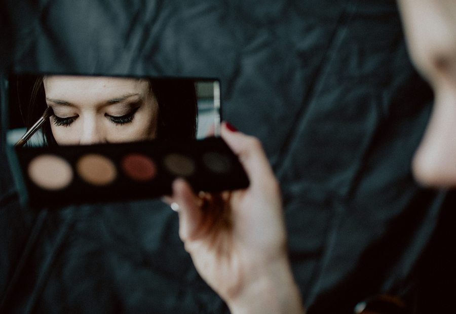
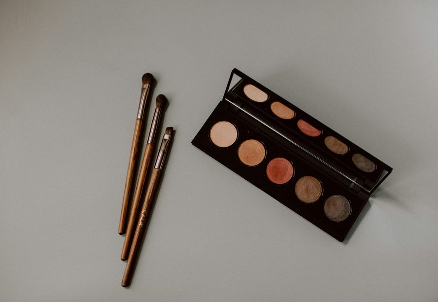

اصول طراحی ناخن لوکس و مینیمال؛ از مانیکور ایمن تا کاشت ژل و استایلهای مدرن
ظرافت در خدمات ناخن بیش از هر چیز به آمادهسازی دقیق صدف طبیعی، ضخامت استاندارد مواد و انتخاب پالت رنگی هماهنگ با تناژ پوست دست وابسته است.
HANIS EDITORIAL JOURNAL
مجموعه مقالات تحلیلی، راهنماهای مراقبت اصولی پوست، مو و ناخن و یادداشتهای آموزشی برای هنرجویان و علاقهمندان زیبایی اصیل.

ظرافت در خدمات ناخن بیش از هر چیز به آمادهسازی دقیق صدف طبیعی، ضخامت استاندارد مواد و انتخاب پالت رنگی هماهنگ با تناژ پوست دست وابسته است.

چگونه با شناخت نوع پوست، لایهگذاری حسابشده رطوبترسان و تکنیک صحیح فیکس، آرایشی شاداب، سبک و مقاوم در برابر نور و عکاسی اجرا کنیم؟

بررسی تفاوت تکنیکهای روشنسازی مو، اهمیت تست سلامت تار مو پیش از کار با مواد و راهکارهای حفظ نرمی و شفافیت رنگ در خانه.

مقایسه کاربردی سیستمهای استحکامسازی و افزایش قد ناخن از نظر انعطافپذیری، ظرافت ظاهری و اصول مراقبت روزمره جهت پیشگیری از لیفت.

معیارهای انتخاب لاین تخصصی بر اساس روحیه فردی، اهمیت تمرین مستمر، اخلاق حرفهای و شیوه ساخت پورتفولیوی استاندارد پس از دوره.
مقالهای مطابق با جستجوی شما یافت نشد.
ارتباط مستقیم با آکادمی